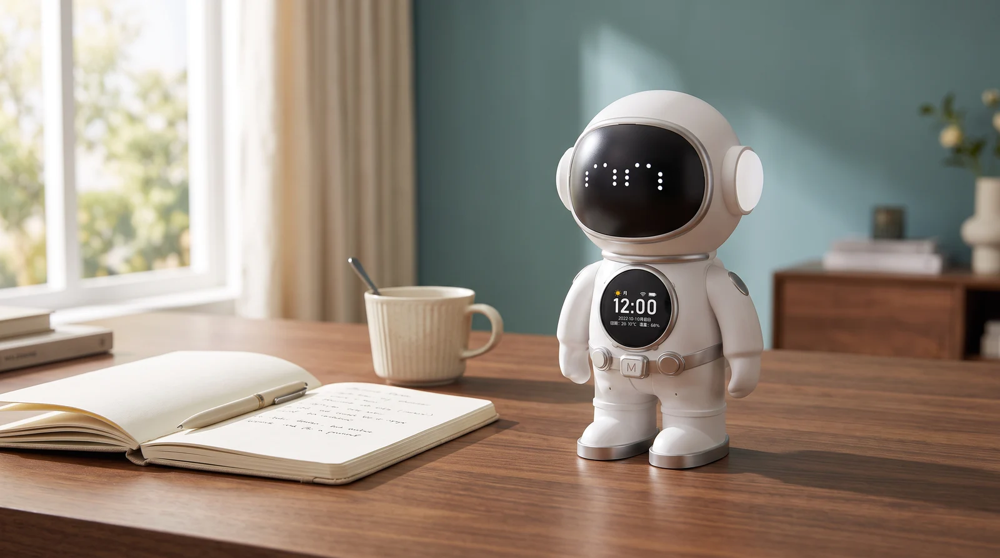
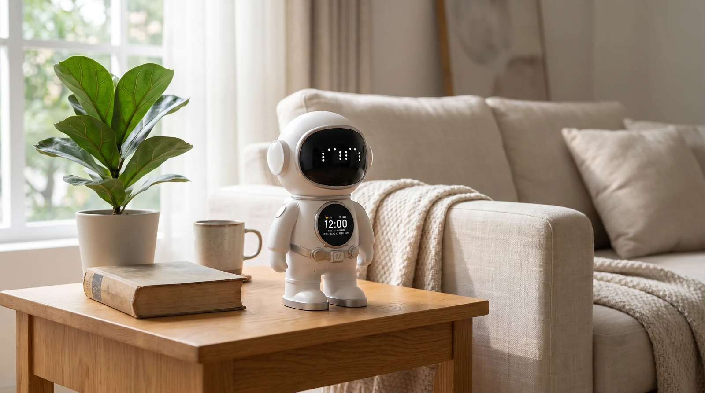
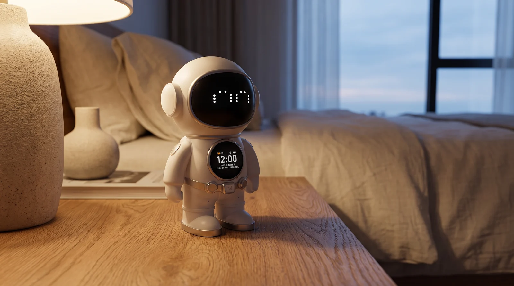

A small explorer
A stationary astronaut form, approximately 20 cm tall, with an expressive LED face.

A familiar face from a little further away. An astronaut-inspired voice companion for the spaces where your day unfolds.
Price and availability have not been confirmed. This model is not available to order.
A stationary astronaut form, approximately 20 cm tall, with an expressive LED face.
The supplier lists cloud-based conversation and English-language support. Final service terms need confirmation.
Bluetooth audio and a clock display combine in a compact desktop object.
The export supplier advertises OEM options. The factory identity, exact minimum order and Nexora configuration remain unconfirmed.
This is a stationary companion, not a walking or navigating robot.
Cloud availability, ongoing fees and US/Canada supply terms are being evaluated.
Supplier-listed features have not been independently tested. Branding, warranty and delivery terms are pending.
View the supplier specification ↗
Familiar materials. A softer pace. A small visitor from tomorrow.
AI-generated lifestyle concept
A distinctive silhouette gives your everyday space a new point of view.
AI-generated lifestyle concept
From workday rituals to quiet evenings, a little imagination belongs here.
AI-generated lifestyle conceptScene types are identified beside each image. Refer to the supplier gallery for product appearance.